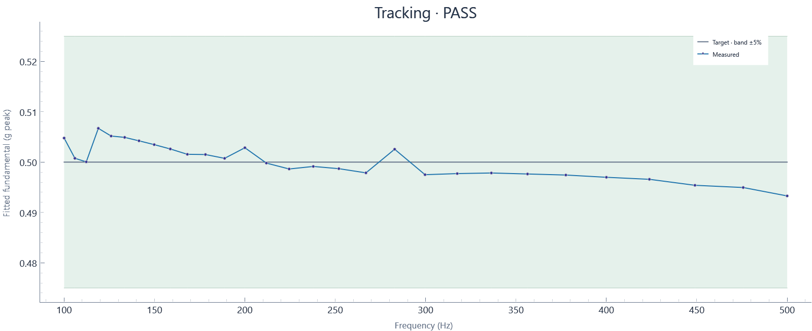

2026-10-29T22:31:19.942253-04:00 · Hardware · Setup 82b76b032fa2
Run: complete · 130 blocks · 130.37 wall seconds · 130.00 sample seconds
Tracking tolerance: ±5%

| Hz | Target g peak | Settled g peak | Error % | Raw transient peak g | Result |
|---|---|---|---|---|---|
| 100 | 0.5 | 0.50478 | +0.956 | 0.54674 | PASS |
| 105.95 | 0.5 | 0.50076 | +0.152 | 0.56353 | PASS |
| 112.25 | 0.5 | 0.50005 | +0.010 | 0.56934 | PASS |
| 118.92 | 0.5 | 0.50671 | +1.342 | 0.56625 | PASS |
| 125.99 | 0.5 | 0.50518 | +1.036 | 0.55452 | PASS |
| 133.48 | 0.5 | 0.50491 | +0.983 | 0.556 | PASS |
| 141.42 | 0.5 | 0.50423 | +0.846 | 0.55143 | PASS |
| 149.83 | 0.5 | 0.50347 | +0.695 | 0.55168 | PASS |
| 158.74 | 0.5 | 0.50261 | +0.522 | 0.55575 | PASS |
| 168.18 | 0.5 | 0.50155 | +0.310 | 0.54946 | PASS |
| 178.18 | 0.5 | 0.5015 | +0.301 | 0.54476 | PASS |
| 188.77 | 0.5 | 0.50075 | +0.150 | 0.54587 | PASS |
| 200 | 0.5 | 0.50286 | +0.571 | 0.66271 | PASS |
| 211.89 | 0.5 | 0.49981 | -0.039 | 0.54279 | PASS |
| 224.49 | 0.5 | 0.49864 | -0.273 | 0.54069 | PASS |
| 237.84 | 0.5 | 0.49914 | -0.172 | 0.54538 | PASS |
| 251.98 | 0.5 | 0.4987 | -0.261 | 0.63689 | PASS |
| 266.97 | 0.5 | 0.49787 | -0.427 | 0.54612 | PASS |
| 282.84 | 0.5 | 0.50256 | +0.512 | 0.54711 | PASS |
| 299.66 | 0.5 | 0.4975 | -0.499 | 0.54513 | PASS |
| 317.48 | 0.5 | 0.49772 | -0.456 | 0.53846 | PASS |
| 336.36 | 0.5 | 0.49784 | -0.432 | 0.53982 | PASS |
| 356.36 | 0.5 | 0.49764 | -0.471 | 0.54056 | PASS |
| 377.55 | 0.5 | 0.49743 | -0.513 | 0.59997 | PASS |
| 400 | 0.5 | 0.49699 | -0.603 | 0.53785 | PASS |
| 423.79 | 0.5 | 0.49659 | -0.683 | 0.54353 | PASS |
| 448.98 | 0.5 | 0.4954 | -0.921 | 0.53389 | PASS |
| 475.68 | 0.5 | 0.49495 | -1.009 | 0.54081 | PASS |
| 500 | 0.5 | 0.49328 | -1.343 | 0.5413 | PASS |
Tracking assessment against configured tolerance, separate from run completion. Sine uses the last settling-window blocks at each dwell; transient raw peaks are reported separately. Random excludes startup/ramp and the initial settling interval; all subsequent full-target blocks are evaluated.
Raw peak means the largest absolute acquired sample; it differs from fitted sine amplitude and RMS.
Calibration: 2026-10-29 current shaker/amp/load; NI USB-4431 Dev1 ai0, 10 mV/g, 2.1 mA IEPE. Last-block tone fit at 0.5 g-peak nominal from 02b82812; revalidate after setup changes.
Input: Dev1/ai0: Acceleration input in g (2.1 mA IEPE)
Clocks: Independent AI/AO clocks configured